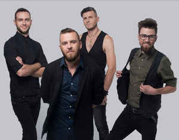
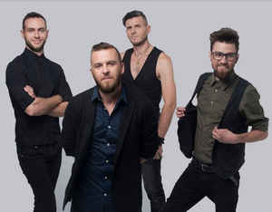

«БЕZ ОБМЕЖЕНЬ» (англ. Without Limits) — український рок-гурт, що розпочав свою діяльність у закарпатському місті Мукачево у 1999 році.
 

Розпочав свою творчість гурт у Мукачеві, де вперше заявив про себе широкій аудиторії 14 січня 1999 року. Тоді до складу команди молодих музикантів входили: Сергій Танчинець, Ігор Рибар, Владислав Воробець, Сергій Попович.
У 2008-му змінився склад гурту і відтоді залишився майже незмінним дотепер.
29 травня БЕZ ОБМЕЖЕНЬ влаштував перший в Україні автомобільний концерт на території колишнього аеропорту.